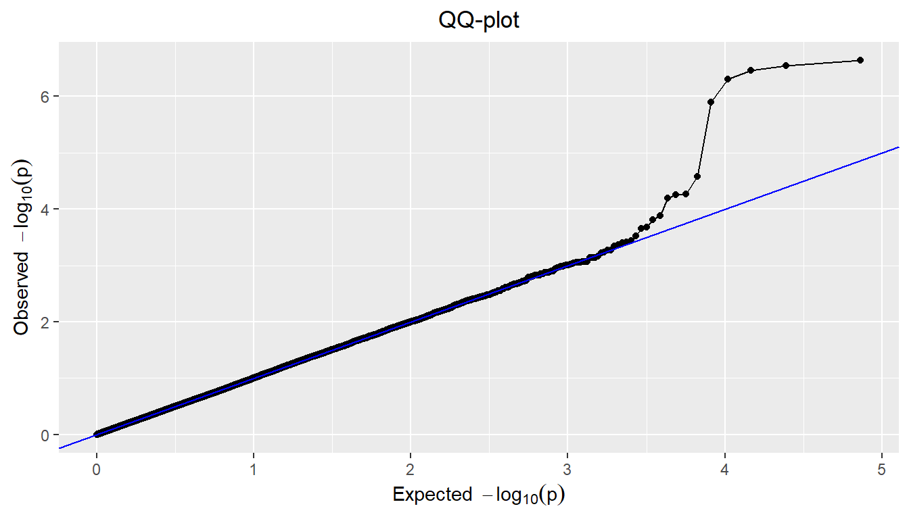
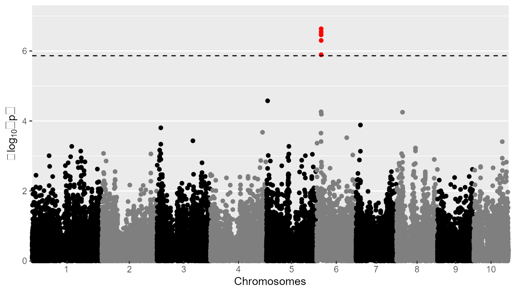
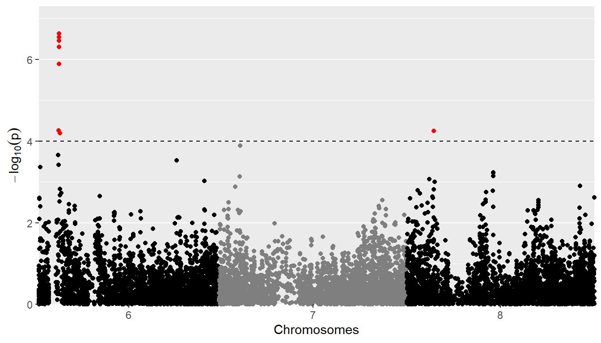
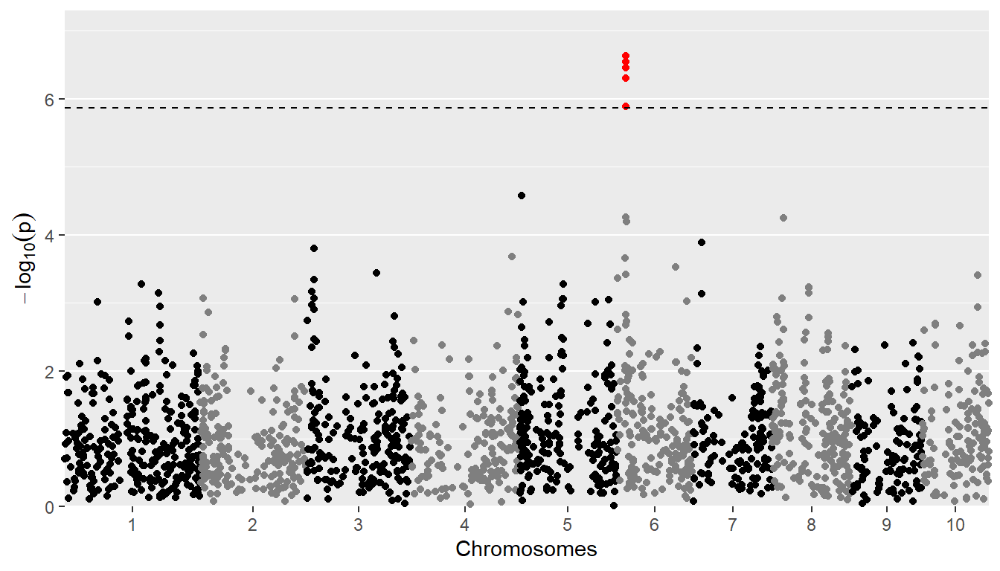
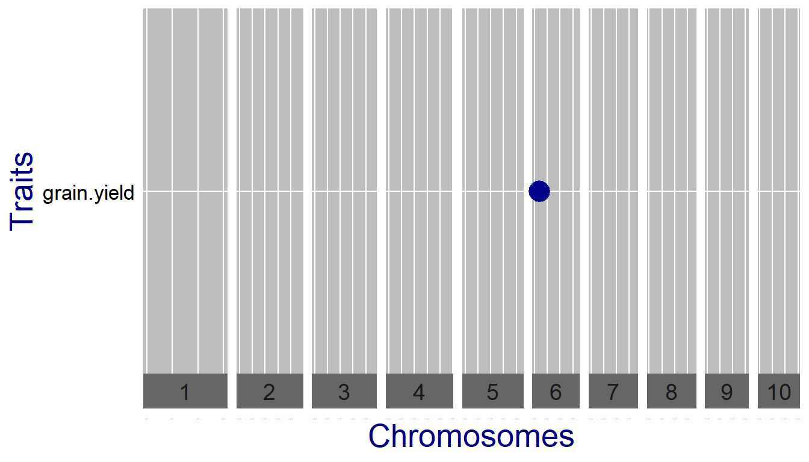
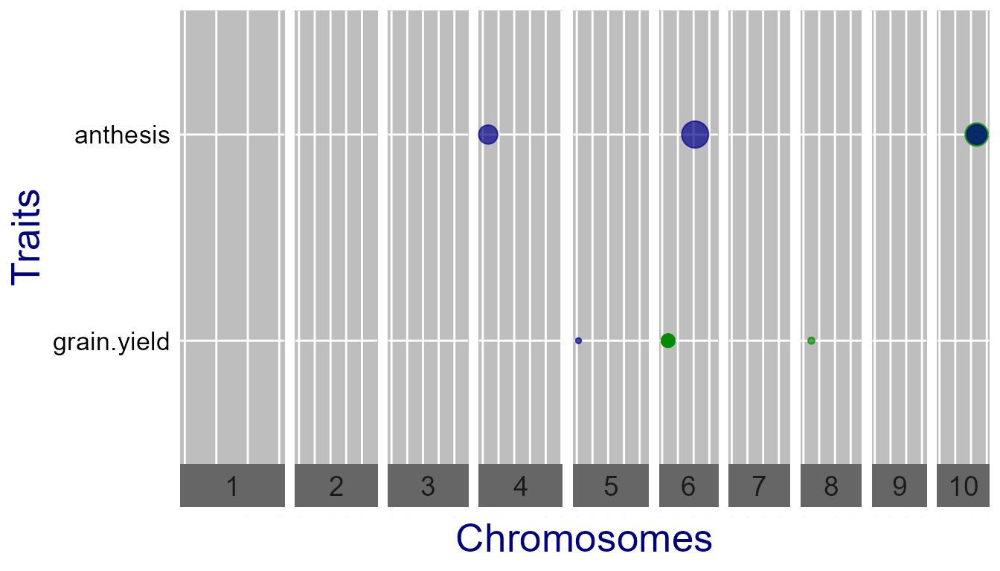
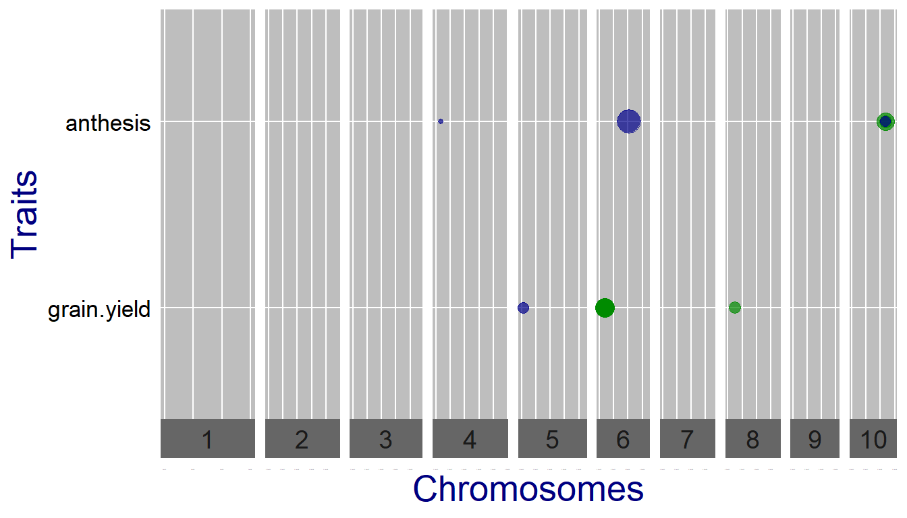

vignettes/GWAS.Rmd
GWAS.RmdThe statgenGWAS package has been designed for performing single trait Genome Wide Association Studies (GWAS).
gData
Data for analysis on genomic data comes from different sources and is stored in one data object of class gData (genomic Data) for convenience. A gData object will contain all data needed for performing analyses, so the first thing to do when using the statgenGWAS package is creating a gData object. A gData object consists of different types of data. All data is optional, however for certain analyses, certain data is required. Additional data can always be added to an existing object later on.
A gData object can be created using the function createGData. If an existing gData object is provided as an input to this function, data is added to the existing object and existing data will be overwritten with a warning if necessary. All data is checked for consistency and, if needed, default names are added with a warning message.
A gData object created this way will consist of the following components:
The data.frame map is used to describe the physical positions of the markers on the chromosomes. The data consists of two columns, chr for the name or number of the chromosome and pos for the position of the marker on the chromosome. The position can be in basepair or in centimorgan. The names of the markers should be the row names of the data.frame.
The marker matrix is stored in the matrix marker within the gData object. It has the names of the markers in its column names and the genotypes in its row names. Markers can either be coded as character strings or as numerical values. In the former case, before performing any analysis, the marker matrix has to be converted to a numerical matrix. This can be do using the function codeMarkers.
Phenotypic data, either directly from field trials or after summarizing can be stored in pheno in the gData object. Pheno can either be a single data.frame or a list of data.frames for storing data for different trials or different summarizations of the original data. The first column of all elements of pheno should be genotype and all the other columns should represent different traits. Storing additional variables should be done in covar. A single data.frame will be converted to a one-item list upon creation of a gData object.
The kinship matrix describes the genetic relatedness between the different genotypes. It is stored in the matrix kinship in the gData object. This should be a square matrix with genotypes in both row and column names and a measure for the genetic relatedness in its cells. There are many ways of computing genetic relatedness some of which are included in this package. Instead of providing one kinship matrix a list of kinship matrices can be provided with each matrix in this list a chromosome specific kinship matrix, usually computed using all markers that are not on the corresponding chromosome. If a named list of kinship matrices is provided, its names should match the names or numbers of the chromosomes in map. Unnamed lists will be given default names.
Further covariates that can be used in the analyses can be stored in the data.frame covar. This data.frame has genotypes in its row names and the covariates in the column names. Covariates can be numerical, factor or character data. The latter will be converted to a factor when creating the gData object.
Suppose there are \(n\) measurements of a phenotype for \(t\) genotypes. Then a very common linear mixed model for association mapping is \[y = X\beta + Zu + e,\]
where \(y\) is an \(n \times 1\) vector of observed phenotypes and \(X\) is an \(n \times q\) design matrix for the fixed effects, including an intercept, covariates, and the SNP of interest. \(\beta\) is the \(q \times 1\) vector of coefficients of these fixed effects, the last element (\(\beta_{\textrm{SNP}}\)) being the SNP-effect of interest. \(Z\) is the \(n \times t\) incidence matrix assigning individuals to genotypes. \(u\) is the vector of genetic random effects, with \(var(u) = \sigma^2_g K\), where \(K\) is a marker-based relatedness matrix. Finally, \(e\) is a \(n \times 1\) vector of residual (non-genetic) errors, with \(var(\epsilon) = \sigma^2_e I_n\). For this model the phenotypic variance-covariance matrix is \(\Sigma = \sigma^2_g ZKZ^{t} + \sigma^2_e I_n\).
Single trait GWAS in the statgenGWAS package follows the approach of Kang et al. (2010) and related papers:
These steps are repeated for each combination of trial and trait for which the analysis is run.
The REML-estimates in step (1) can be computed using either the Efficient Mixed Model Association (EMMA) algorithm (Kang et al. 2008), or the Newton-Raphson (NR) algorithm (Tunnicliffe 1989). Our implementation of GLS borrows some code of Segura et al. (2012).
As an example of the functionality of the package a worked example is provided using maize data from the European Union project DROPS. The data is available from https://data.inrae.fr/dataset.xhtml?persistentId=doi:10.15454/IASSTN (Millet et al. 2019) and the relevant data sets are included as data.frames in the statgenGWAS package.
The first step is loading the data into R.
dropsMarkers contains the coded marker information for 41722 SNPs and 246 genotypes. dropsMap contains information about the positions of those SNPs on the B73 reference genome V2. dropsPheno contains data for the genotypic means (Best Linear Unbiased Estimators, BLUEs), with one value per experiment per genotype, for eight traits. For a more detailed description of the contents of the data see help(dropsData).
The next step is to create a gData object from the raw data that can be used for the GWAS analysis. For this the raw data has to be converted to a suitable format for a gData object. When creating a gData object, the markers should be input as a matrix or data.frame with genotypes in the row names and markers in the column names. The latter is already satisfied so only the row names should be added and the Ind column used for that should be dropped.
## Add genotypes as row names of dropsMarkers and drop Ind column. rownames(dropsMarkers) <- dropsMarkers[["Ind"]] dropsMarkers <- dropsMarkers[colnames(dropsMarkers) != "Ind"]
The map used as input when creating a gData object, should at least have the columns “chr” and “pos” and the row names should be the names of the SNPs. Other columns are ignored when creating a gData object, so they can be left as they are.
## Add genotypes as row names of dropsMap. rownames(dropsMap) <- dropsMap[["SNP.names"]] ## Rename Chomosome and Position columns. colnames(dropsMap)[match(c("Chromosome", "Position"), colnames(dropsMap))] <- c("chr", "pos")
Now a gData object containing only map and marker information can be created. This object can be used as a base. Phenotypic data, a kinship matrix and covariates may be added later on.
## Create a gData object containing map and marker information. gDataDrops <- createGData(geno = dropsMarkers, map = dropsMap)
The next step involves adding phenotypic data to the gData object just created. dropsPheno contains genotypic means for 28 trials. To be able to run a GWAS analysis per trial the data has to be added as a list of 28 data.frames. These data.frames should have “genotype” as their first column and may only contain traits after that. Other columns need to be dropped.
The phenotypic data can be added to gDataDrops using the same function that was used for creating the object. Adding an argument gData to the function call will add new data to an existing gData object. If gDataDrops would have been non-empty, the phenotypic data already present would be overwritten.
## Rename Variety_ID to genotype. colnames(dropsPheno)[colnames(dropsPheno) == "Variety_ID"] <- "genotype" ## Select relevant columns and convert data to a list. dropsPhenoList <- split(x = dropsPheno[c("genotype", "grain.yield", "grain.number", "seed.size", "anthesis", "silking", "plant.height", "tassel.height", "ear.height")], f = dropsPheno[["Experiment"]]) ## Add phenotypic data to gDataDrops. gDataDrops <- createGData(gData = gDataDrops, pheno = dropsPhenoList)
Note that if the phenotypic data consists of only one trial/experiment, it can be added as a single data.frame without first converting it to a list. In this case createGData will convert the input to a list with one item.
To get an idea of the contents of the data a summary of the gData object can be made. This will give an overview of the content of the map and markers and also print a summary per trait per trial. Since there are 28 trials and 8 traits in gDataDrops giving a very large summary, the output is restricted here to one trial, Mur13W, using the trials parameter of the summary function.
## Summarize gDataDrops. summary(gDataDrops, trials = "Mur13W") #> map #> Number of markers: 41722 #> Number of chromosomes: 10 #> #> markers #> Number of markers: 41722 #> Number of genotypes: 246 #> Content: #> 0 1 2 NA #> 0.28 0.01 0.71 0 #> #> pheno #> Number of trials: 1 #> #> Mur13W: #> Number of traits: 8 #> Number of genotypes: 246 #> #> grain.yield grain.number seed.size anthesis silking plant.height tassel.height ear.height #> Min. 3.3 1348 229 56 59 222 NA 102 #> 1st Qu. 6.3 2641 284 61 64 251 NA 125 #> Median 7.5 2965 298 63 66 258 NA 133 #> Mean 7.4 2986 297 63 66 259 NaN 133 #> 3rd Qu. 8.4 3359 312 66 68 266 NA 141 #> Max. 11.4 4510 365 71 74 294 NA 172 #> NA's 0.0 0 0 0 0 0 246 0
Marker data has to be numerical and without missing values in order to do GWAS analysis. This can be achieved using the codeMarkers function. The marker data available for the DROPS project has already been converted from A/T/C/G to 0/1/2. The codeMarkers function in the package can still be used to further clean the markers, e.g. by removing the duplicate SNPs.
## Remove duplicate SNPs from gDataDrops. gDataDropsDedup <- codeMarkers(gDataDrops, impute = FALSE, verbose = TRUE) #> Input contains 41722 SNPs for 246 genotypes. #> 0 genotypes removed because proportion of missing values larger than or equal to 1. #> 0 SNPs removed because proportion of missing values larger than or equal to 1. #> 5098 duplicate SNPs removed. #> Output contains 36624 SNPs for 246 genotypes.
Note that duplicate SNPs are removed at random. To get reproducible results make sure to set a seed.
To demonstrate the options of the codeMarkers function, we randomly replace 1% of the values in the marker matrix by NA.
## Copy gData object. gDataDropsMiss <- gDataDrops ## Add random missing values to 1% of the values in the marker matrix. set.seed(1) nVal <- nrow(gDataDropsMiss$markers) * ncol(gDataDropsMiss$markers) gDataDropsMiss$markers[sample(x = 1:nVal, size = nVal / 100)] <- NA
To re-impute the missing values added above, codeMarkers has to be run with impute = TRUE. Then the type of imputation can be chosen setting the parameter imputeType:
imputeType = "fixed": Impute all missing values by a single fixed value. Use the parameter fixedValue to set this value.imputeType = "random": Impute missing values with a random value based on the non-missing values for a SNP.imputeType = "beagle": Impute missing values using the independent beagle software (Browning and Browning 2016). This software is included in the package and is called with its default settings. It requires java to run. Since running beagle takes a long time for the current data, the call to beagle is only shown here but not run.Before imputation, genotypes with a high proportion of missing values in the marker matrix can be removed by setting the parameter nMissGeno. Setting it to 0.1 will remove all genotypes with a proportion of missing values higher than 0.1. In a similar way SNPs with a high proportion of missing values can be removed setting nMiss. The default value for both parameters is 1, so genotypes and SNPs with only missing values are always removed.
The parameter MAF can be used to remove SNPs with a Minor Allele Frequency (MAF) lower than the specified MAF. As with removing duplicate SNPs this will be done both before and after imputation.
## Impute missing values with random value. ## Remove SNPs and genotypes with proportion of NA larger than 0.01. gDataDropsImputed <- codeMarkers(gData = gDataDropsMiss, nMissGeno = 0.01, nMiss = 0.01, impute = TRUE, imputeType = "random", verbose = TRUE) #> Input contains 41722 SNPs for 246 genotypes. #> 119 genotypes removed because proportion of missing values larger than or equal to 0.01. #> 14341 SNPs removed because proportion of missing values larger than or equal to 0.01. #> 882 duplicate SNPs removed. #> 15213 missing values imputed. #> 1046 duplicate SNPs removed after imputation. #> Output contains 25453 SNPs for 127 genotypes.
## Impute missing values using beagle software. gDataDropsImputedBeagle <- codeMarkers(gData = gDataDropsMiss, impute = TRUE, imputeType = "beagle", verbose = TRUE)
The cleaned gData object can be used for performing single trait GWAS analysis. With all the default settings the analysis already performs quite well. In the examples below the trial Mur13W is used to demonstrate the options of the runSingleTraitGwas function.
## Run single trait GWAS for traits 'grain.yield' and 'anthesis' for trial Mur13W. GWASDrops <- runSingleTraitGwas(gData = gDataDropsDedup, trials = "Mur13W", traits = c("grain.yield", "anthesis"))
The output of the runSingleTraitGwas function is an object of class GWAS. This is a list consisting of five components described below.
GWAResult: a list of data.tables, one for each trial for which the analysis was run. Each data.table has the following columns:
| trait | trait name |
| snp | SNP name |
| chr | chromosome on which the SNP is located |
| pos | position of the SNP on the chromosome |
| allFreq | allele frequency of the SNP |
| pValue | P-value for the SNP |
| effect | effect of the SNP on the trait value |
| effectSe | standard error of the effect of the SNP on the trait value |
| RLR2 | likelihood-ratio-based R2 as defined in Sun et al. (2010) |
| LOD | LOD score for the SNP, defined as \(-\log_{10}(pValue)\) |
print(head(GWASDrops$GWAResult$Mur13W), row.names = FALSE) #> trait snp chr pos allFreq pValue effect effectSe RLR2 LOD #> grain.yield SYN83 1 3498 0.60 0.38 -0.084 0.097 0.00310 0.417 #> grain.yield PZE-101000060 1 157104 0.72 0.51 0.067 0.102 0.00176 0.291 #> grain.yield PZE-101000088 1 238347 0.84 0.83 -0.027 0.125 0.00019 0.081 #> grain.yield PZE-101000083 1 239225 0.58 0.22 -0.113 0.092 0.00615 0.660 #> grain.yield PZE-101000108 1 255850 0.90 0.47 -0.124 0.170 0.00215 0.330 #> grain.yield PZE-101000111 1 263938 0.83 0.32 -0.117 0.119 0.00395 0.489
signSnp: a list of data.tables, one for each trial for which the analysis was run, containing the significant SNPs. Optionally also the SNPs close to the significant SNPs are included in the data.table. See 3.6.7 for more information on how to do this. The data.tables in signSnp consist of the same columns as those in GWAResult described above. Two extra columns are added:
| snpStatus | either “significant SNP” or “within … of a significant SNP” |
| propSnpVar | proportion of the variance explained by the SNP |
print(GWASDrops$signSnp$Mur13W, row.names = FALSE) #> trait snp chr pos allFreq pValue effect effectSe RLR2 LOD snpStatus #> grain.yield PZE-106021363 6 18846283 0.70 3.5e-07 0.52 0.1 0.096 6.5 significant SNP #> grain.yield PZE-106021410 6 18990291 0.70 2.3e-07 0.53 0.1 0.098 6.6 significant SNP #> grain.yield PZE-106021419 6 18991091 0.74 2.9e-07 0.53 0.1 0.097 6.5 significant SNP #> grain.yield PZE-106021420 6 18991117 0.70 1.3e-06 0.50 0.1 0.087 5.9 significant SNP #> grain.yield PZE-106021424 6 18991481 0.74 5.0e-07 0.52 0.1 0.093 6.3 significant SNP #> propSnpVar #> 0.088 #> 0.090 #> 0.083 #> 0.080 #> 0.080
kinship: the kinship matrix (or matrices) used in the GWAS analysis. This can either be the user provided kinship matrix or the kinship matrix computed when running the runSingleTraitGwas function.
thr: a list of thresholds, one for each trial for which the analysis was run, used for determining significant SNPs.
GWASInfo: additional information on the analysis, e.g. the call and the type of threshold used.
For a quick overview of the results, e.g. the number of significant SNPs, use the summary function.
## Create summary of GWASDrops. summary(GWASDrops) #> Mur13W: #> Traits analysed: grain.yield, anthesis #> #> Data are available for 36624 SNPs. #> 0 of them were not analyzed because their minor allele frequency is below 0.01 #> #> Trait: grain.yield #> #> Mixed model with only polygenic effects, and no marker effects: #> Genetic variance: 0.96 #> Residual variance: 0.21 #> #> LOD-threshold: 5.9 #> Number of significant SNPs: 5 #> Smallest p-value among the significant SNPs: 2.3e-07 #> Largest p-value among the significant SNPs: 1.3e-06 (LOD-score: 5.9) #> #> No genomic control correction was applied #> Genomic control inflation-factor: 0.99 #> #> Trait: anthesis #> #> Mixed model with only polygenic effects, and no marker effects: #> Genetic variance: 4 #> Residual variance: 0.87 #> #> LOD-threshold: 5.9 #> Number of significant SNPs: 0 #> #> No genomic control correction was applied #> Genomic control inflation-factor: 0.97
The plot.GWAS function can be used to visualize the results in GWASDrops, with a QQ-plot, Manhattan plot or QTL-plot.
A QQ-plot of the observed against the expected \(-\log_{10}(p)\) values can be made by setting plotType = "qq". Most of the SNPs are expected to have no effect, resulting in P-values uniformly distributed on \([0,1]\), and leading to the identity function (\(y=x\)) on the \(-\log_{10}(p)\) scale. As in the plot below, deviations from this line should only occur on the right side of the plot, for a small number of SNPs with an effect on the phenotype (and possibly SNPs in LD). There is inflation if the observed \(-\log_{10}(p)\) values are always above the line \(y=x\), and (less common) deflation if they are always below this line. A QQ-plot therefore gives a first impression of the quality of the GWAS model: if for example \(-\log_{10}(p)\) values are consistently too large (inflation), the correction for genetic relatedness may not be adequate.
## Plot a QQ-plot of GWAS Drops. plot(GWASDrops, plotType = "qq", trait = "grain.yield")

A manhattan plot is made by setting plotType = "manhattan". Significant SNPs are marked in red.
## Plot a manhattan plot of GWAS Drops. plot(GWASDrops, plotType = "manhattan", trait = "grain.yield")

To change the threshold when plotting, without having to redo the GWAS analysis, use the parameter yThr. Use chr to plot a subset of chromosomes.
## Plot a manhattan plot of GWAS Drops. ## Set significance threshold to 4 and only plot chromosomes 6 to 8. plot(GWASDrops, plotType = "manhattan", trait = "grain.yield", yThr = 4, chr = 6:8)

If the number of SNPs gets large, the plotting might get slow. This can be dealt with by setting the parameter lod. When doing so, for the SNPs with a LOD-value below lod, only 5% will be plotted. The chance of a SNP being plotted is proportional to its LOD-value. SNPs with a higher LOD have a higher chance of being plotted. Since most SNPs will have low LOD-values, this restriction doesn’t very much affect the resulting plot. Note that the 5% of the SNPs that is plotted, is selected randomly. For reproducible results make sure to set a seed.
## Plot a manhattan plot of GWAS Drops. ## Plot only 5% of SNPs with a LOD below 3. set.seed(1) plot(GWASDrops, plotType = "manhattan", trait = "grain.yield", lod = 3)

The user can specify known effects (effects), which will be used for determining true/false positives and false negatives. These are displayed in green, orange and yellow, respectively. Also the visual appearence of the plot can be altered. See for specifics on how to do this help(plot.GWAS).
A qtl plot can be made by setting plotType = "qtl". In this plot the significant SNPs are marked by circles at their genomic positions, with diameter proportional to the estimated effect size; for an example see Millet et al. (2016). Typically, this is done for multiple traits or environments, with the genomic position on the x-axis, which are displayed horizontally above each other and can thus be compared.
## Plot a qtl plot of GWAS Drops for Mur13W. plot(GWASDrops, plotType = "qtl")

In this case, for “anthesis” there are no significant SNPs so the line is left out. To change the threshold when plotting without having to redo the GWAS analysis, use the parameter yThr.
## Plot a qtl plot of GWAS Drops for Mur13W. ## Set significance threshold to 4. plot(GWASDrops, plotType = "qtl", yThr = 4)

Now there are significant SNPs for both traits. However since the traits are measured on a different scale, the effect estimates cannot be compared. For better comparison, one can set normalize = TRUE, which divides the estimates by the standard deviation of the phenotype.
## Plot a qtl plot of GWAS Drops for Mur13W. ## Set significance threshold to 4 and normalize effect estimates. plot(GWASDrops, plotType = "qtl", yThr = 4, normalize = TRUE)

Now the effects are on the same scale and comparable.
Other parameters can be used to plot a subset of the chromosomes (chr) and directly export the plot to .pptx (exportPptx = TRUE and specify pptxName). Note that the officer package is required for this. A full list of parameters can be found by running help(plot.GWAS).
The runSingleTraitGwas function has an argument kinshipMethod, which defines the kinship matrix used for association mapping. Kinship matrices can be computed directly using the kinship function or within the runSingleTraitGwas function. There are four options:
kinshipMethod = "astle", the default; see e.g. equation (2.2) in Astle and Balding (2009))kinshipMethod = "IBS"; see e.g. equation (2.3) in Astle and Balding (2009))kinshipMethod = "vanRaden")kin needs to be specified.By default, the same kinship matrix is used for testing all SNPs (GLSMethod = "single"). When GLSMethod = "multi", the kinship matrix is chromosome-specific. In this case, the function fits variance components and computes effect-estimates and P-values for each chromosome in turn, using the kinship matrix for that chromosome. Each chromosome-specific kinship matrix is computed using the method specified by the argument kinshipMethod, using all SNPs that are not on this chromosome. As shown by Rincent et al. (2014), this often gives a considerable improvement in power.
## Run single trait GWAS for trial 'Mur13W' and trait 'grain.yield' ## Use chromosome specific kinship matrices computed using method of van Raden. GWASDropsChrSpec <- runSingleTraitGwas(gData = gDataDropsDedup, traits = "grain.yield", trials = "Mur13W", GLSMethod = "multi", kinshipMethod = "vanRaden")
The runSingleTraitGwas function has many more parameters that can be specified. In this section similar parameters are grouped and explained with examples on how to use them.
The analysis can be performed for more than one trait in a single function call. Not specifying traits at all will perform the analysis for all traits that are present in the phenotypic data in the gData object. The results will be combined in a single output object with the traits specified in the column trait in GWAResult and signSnp within this object. Running for multiple trials is also possible and will generate a list of outputs within GWAResult and signSnp in the output object. Not specifying trials will run the GWAS analysis for all trials in the phenotypic data in the gData object.
The threshold for selecting significant SNPs in a GWAS analysis is computed by default using Bonferroni correction, with an alpha of 0.05. The alpha can be modified setting the option alpha when calling runSingleTraitGwas. Two other threshold types can be used: a fixed threshold (thrType = "fixed") specifying the \(-\log_{10}(p)\) (LODThr) value of the threshold, or a threshold that defines the n SNPs with the highest \(-\log_{10}(p)\) scores as significant SNPs. Set thrType = "small" together with nSnpLOD = n to do this. In the following example, we select all SNPs with \(p < 10^{-4}\).
## Run single trait GWAS for trait 'grain.yield' for Mur13W. ## Use a fixed significance threshold of 4. GWASDropsFixThr <- runSingleTraitGwas(gData = gDataDropsDedup, trials = "Mur13W", traits = "grain.yield", thrType = "fixed", LODThr = 4)
Controlling false discovery rate
A final option for selecting significant SNPs is by setting thrType = "fdr". When doing so the significant SNPs won’t be selected by computing a genome wide threshold, but by trying to control the rate of false discoveries as in Brzyski et al. (2016).
First, a list is defined containing all SNPs with a p-Value below pThr. Then clusters of SNPs are created using a two step iterative process in which SNPs with the lowest p-values are selected as cluster representatives. This SNP and all SNPs that have a correlation with this SNP of \(\rho\) or higher (specified by the function parameter rho) will form a cluster. The selected SNPs are removed from the list and the procedure is repeated until no SNPs are left. At the end of this step, one has a list of clusters, with corresponding vector of p-values of the cluster representatives. Finally, to determine the number of significant clusters, the first cluster is determined for which the p-value of the cluster representative is larger than \(cluster_{number} * \alpha / m\), where \(m\) is the number of SNPs and \(\alpha\) can be specified by the corresponding function parameter. All previous clusters are selected as significant.
There are two ways to compute the phenotypic variance covariance matrix used in the GWAS analysis. Either the EMMA algorithm or the Newton-Raphson algorithm. Specify the method by setting the parameter remlAlgo to either "EMMA" or "NR". By default the EMMA algorithm is used.
## Run single trait GWAS for trait 'grain.yield' for Mur13W. ## Use the Newton Raphson algorithm for computing the variance components. GWASDropsNR <- runSingleTraitGwas(gData = gDataDropsDedup, trials = "Mur13W", traits = "grain.yield", remlAlgo = "NR")
In the GWAS object returned by runSingleTraitGwas, the inflation factor (Devlin and Roeder 1999) is returned in the GWASInfo. It is also shown in the summary. Ideally this factor should be 1, meaning there is no inflation at all. In practice however this rarely happens. Its value for Mur13W can be checked as follows:
GWASDrops$GWASInfo$inflationFactor$Mur13W #> grain.yield anthesis #> 0.99 0.97
Both values are very close to 1, so in this case there is no need to apply any correction based on this. If the values are further away from 1, the inflation can be corrected for by setting genomicControl = TRUE in runSingleTraitGwas.
## Run single trait GWAS for trait 'grain.yield' for Mur13W. ## Perform genomic correction on the p-Values. GWASDropsGenControl <- runSingleTraitGwas(gData = gDataDropsDedup, trials = "Mur13W", traits = "grain.yield", genomicControl = TRUE)
Covariates can be included as extra fixed effects in the GWAS model. The runSingleTraitGwas function distinguishes between ‘usual’ covariates and SNP-covariates. The former could be design factors such as block, or other traits one wants to condition on. In the latter case, the covariate(s) are one or more of the markers contained in the genotypic data. SNP-covariates can be set with the parameter snpCov, which should be a vector of marker-names. Similarly, other covariates should be specified using the parameter covar, containing a vector of covariate names. The gData object should contain these covariates in gData$covar.
In case SNP-covariates are used, GWAS for all the other SNPs is performed with the the SNP-covariates as extra fixed effect; also the null model used to estimate the variance components includes these effects. For each SNP in SNP-covariates, a p-value is obtained using the same F-test and null model to estimate the variance components, but with only all other SNPs (if any) in SNP-covariates as fixed effects.
## Run single trait GWAS for trait 'grain.yield' for Mur13W. ## Use PZE-106021410, the most significant SNP, a SNP covariate. GWASDropsSnpCov <- runSingleTraitGwas(gData = gDataDropsDedup, trials = "Mur13W", traits = "grain.yield", snpCov = "PZE-106021410")
It is recommended to remove SNPs with a low minor allele frequency (MAF) from the data before starting a GWAS analysis. However it is also possible to do so in the analysis itself. The difference between these approaches is that codeMarkers removes the SNPs, whereas runSingleTraitGwas excludes them from the analysis but leaves them in the output (with results set to NA). In the latter case it will still be possible to see the allele frequency of the SNP.
By default all SNPs with a MAF lower than 0.01 are excluded from the analysis. This can be controlled by the parameter MAF. Setting MAF to 0 will still exclude duplicate SNPs since duplicates cause problems when fitting the underlying models. Instead of excluding SNPs with a low MAF it is also possible to exclude SNPs with a low minor allele count (MAC). This is done setting useMAF = FALSE and then specifying MAC.
## Run single trait GWAS for trait 'grain.yield' for Mur13W. ## Only include SNPs that have a MAC of at least 20 GWASDropsMAC <- runSingleTraitGwas(gData = gDataDropsDedup, trials = "Mur13W", traits = "grain.yield", useMAF = FALSE, MAC = 20)
Apart from the significant SNPs themselves, it is usually of interest to identify SNPs that are close to the significant SNPs. These can be included in the output by setting sizeIncludedRegion to a positive value. When doing so, SNPs that are within a distance of sizeIncludedRegion from a significant SNP (based on the information in the map) are included in the signSnp data.table in the output. Only SNPs having sufficient linkage disequilibrium (LD) with the significant SNP are included. LD is measured in terms of the squared Pearson correlation (\(R^2\)). The minimum \(R^2\) required to be included can be specified by setting minR2.
## Run single trait GWAS for trait 'grain.yield' for Mur13W. ## Include SNPs within 200000 centimorgan of significant SNPs with a minimum LD of 0.1. GWASDropsInclClose <- runSingleTraitGwas(gData = gDataDropsDedup, trials = "Mur13W", traits = "grain.yield", sizeInclRegion = 200000, minR2 = 0.1) ## Check signSnp in output. print(head(GWASDropsInclClose$signSnp$Mur13W), row.names = FALSE) #> trait snp chr pos allFreq pValue effect effectSe RLR2 LOD #> grain.yield PZE-106020937 6 17580232 0.93 0.7750 -0.059 0.205 0.00033 0.11 #> grain.yield PZE-106020972 6 17723425 0.67 0.3802 0.091 0.103 0.00314 0.42 #> grain.yield PZE-106021050 6 17960951 0.77 0.1719 0.161 0.117 0.00758 0.76 #> grain.yield PZE-106021179 6 18246324 0.81 0.5384 0.072 0.117 0.00155 0.27 #> grain.yield PZE-106021183 6 18247710 0.80 0.0085 -0.324 0.124 0.02756 2.07 #> grain.yield PZE-106021194 6 18255168 0.60 0.1518 -0.142 0.099 0.00833 0.82 #> snpStatus propSnpVar #> within 2e+05 of a significant SNP 0.00034 #> within 2e+05 of a significant SNP 0.00280 #> within 2e+05 of a significant SNP 0.00713 #> within 2e+05 of a significant SNP 0.00129 #> within 2e+05 of a significant SNP 0.02672 #> within 2e+05 of a significant SNP 0.00762
Astle, William, and David J. Balding. 2009. “Population Structure and Cryptic Relatedness in Genetic Association Studies.” Statistical Science 24 (4): 451–71. https://doi.org/10.1214/09-sts307.
Browning, Brian L., and Sharon R. Browning. 2016. “Genotype Imputation with Millions of Reference Samples.” The American Journal of Human Genetics 98 (1): 116–26. https://doi.org/10.1016/j.ajhg.2015.11.020.
Brzyski, Damian, Christine B. Peterson, Piotr Sobczyk, Emmanuel J. Candès, Malgorzata Bogdan, and Chiara Sabatti. 2016. “Controlling the Rate of GWAS False Discoveries.” Genetics 205 (1): 61–75. https://doi.org/10.1534/genetics.116.193987.
Devlin, B., and Kathryn Roeder. 1999. “Genomic Control for Association Studies.” Biometrics 55 (4): 997–1004. https://doi.org/10.1111/j.0006-341x.1999.00997.x.
Kang, Hyun Min, Jae Hoon Sul, Susan K Service, Noah A Zaitlen, Sit-yee Kong, Nelson B Freimer, Chiara Sabatti, and Eleazar Eskin. 2010. “Variance Component Model to Account for Sample Structure in Genome-Wide Association Studies.” Nature Genetics 42 (4): 348–54. https://doi.org/10.1038/ng.548.
Kang, Hyun Min, Noah A. Zaitlen, Claire M. Wade, Andrew Kirby, David Heckerman, Mark J. Daly, and Eleazar Eskin. 2008. “Efficient Control of Population Structure in Model Organism Association Mapping.” Genetics 178 (3): 1709–23. https://doi.org/10.1534/genetics.107.080101.
Millet, Emilie J., Cyril Pommier, Mélanie Buy, Axel Nagel, Willem Kruijer, Therese Welz-Bolduan, Jeremy Lopez, et al. 2019. “A Multi-Site Experiment in a Network of European Fields for Assessing the Maize Yield Response to Environmental Scenarios.” Portail Data Inra. https://doi.org/10.15454/IASSTN.
Millet, Emilie, Claude Welcker, Willem Kruijer, Sandra Negro, Stephane Nicolas, Sebastien Praud, Nicolas Ranc, et al. 2016. “Genome-Wide Analysis of Yield in Europe: Allelic Effects as Functions of Drought and Heat Scenarios.” Plant Physiology, July, pp.00621.2016. https://doi.org/10.1104/pp.16.00621.
Rincent, Renaud, Laurence Moreau, Hervé Monod, Estelle Kuhn, Albrecht E. Melchinger, Rosa A. Malvar, Jesus Moreno-Gonzalez, et al. 2014. “Recovering Power in Association Mapping Panels with Variable Levels of Linkage Disequilibrium.” Genetics 197 (1): 375–87. https://doi.org/10.1534/genetics.113.159731.
Segura, Vincent, Bjarni J Vilhjálmsson, Alexander Platt, Arthur Korte, Ümit Seren, Quan Long, and Magnus Nordborg. 2012. “An Efficient Multi-Locus Mixed-Model Approach for Genome-Wide Association Studies in Structured Populations.” Nature Genetics 44 (7): 825–30. https://doi.org/10.1038/ng.2314.
Sun, G, C Zhu, M H Kramer, S-S Yang, W Song, H-P Piepho, and J Yu. 2010. “Variation Explained in Mixed-Model Association Mapping.” Heredity 105 (4): 333–40. https://doi.org/10.1038/hdy.2010.11.
Tunnicliffe, G Wilson. 1989. “On the Use of Marginal Likelihood in Time Series Model Estimation.” JRSS 51 (1): 15–27.
VanRaden, P. M. 2008. “Efficient Methods to Compute Genomic Predictions.” Journal of Dairy Science 91 (11): 4414–23. https://doi.org/10.3168/jds.2007-0980.